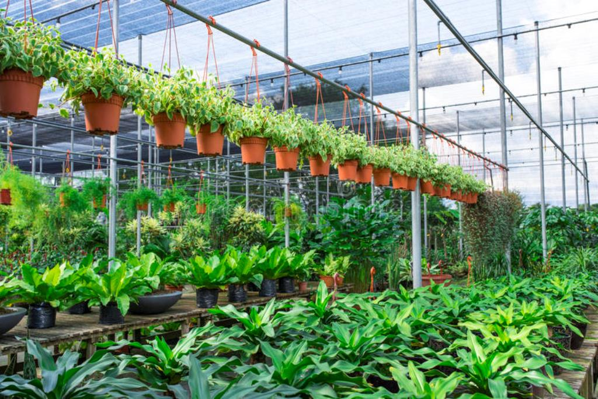

OUR NURSERY
SUMMARY
- A nursery is a place where plants are propagated and grown to a desired size.
- Mostly the plants concerned are for gardening, forestry or conservation biology, rather than agriculture.
- They include retail nurseries, which sell to the general public, wholesale nurseries, which sell only to businesses such as other nurseries and to commercial gardeners, and private nurseries, which supply the needs of institutions or private estates.
- Some will also work in plant breeding.
- A nurseryman is a person who owns or works in a nursery.
- Some nurseries specialize in certain areas, which may include: propagation and the selling of small or bare root plants to other nurseries, growing out plant materials to a saleable size, or retail sales.
- Nurseries may also specialize in one type of plant:
- e.g., groundcovers, shade plants, or rock garden plants. Some produce bulk stock, whether seedlings or grafted, of particular varieties for purposes such as fruit trees for orchards, or timber trees for forestry. Some produce stock seasonally, ready in springtime for export to colder regions where propagation could not have been started so early, or to regions where seasonal pests prevent profitable growing early in the season.
- There are a number of different types of nurseries, broadly grouped as wholesale or retail nurseries, with some overlap depending on the specific operation.
- Wholesale nurseries produce plants in large quantities which are sold to retail nurseries, landscapers, garden centers, and other retail outlets which then sell to the public.
- it may be small operations that produce a specific type of plant using a small area of land, or very larger operations covering many acres
- They propagate plant material or buy plants from other nurseries which may include rooted or unrooted cuttings, or small rooted plants called plugs, or field grown bare root plants, which are planted and grown to a desired size.
- Some wholesale nurseries produce plants on contract for others which place an order for a specific number and size of plant, while others produce a wide range of plants that are offered for sale to other nurseries and landscapers and sold as first come first served.
- Retail nurseries sell plants ready to be placed in the landscape or used in homes and businesses.
Forest tree nurseries
- Whether in the forest or in the nursery, seedling growth is fundamentally influenced by soil fertility, but nursery soil fertility is readily amenable to amelioration, much more so than is forest soil.
- Nitrogen, phosphorus, and potassium are regularly supplied as fertilizers, and calcium and magnesium are supplied occasionally. Applications of fertilizer nitrogen do not build up in the soil to develop any appreciable storehouse of available nitrogen for future crops
- Phosphorus and potassium, however, can be accumulated as a storehouse available for extended periods.
- Fertilization permits seedling growth to continue longer through the growing season than unfertilized stock; fertilized white spruce attained twice the height of unfertilized
- High fertility in the rooting medium favours shoot growth over root growth, and can produce top-heavy seedlings ill-suited to the rigors of the outplant site. Nutrients in oversupply can reduce growth or the uptake of other nutrients
- As well, an excess of nutrient ions can prolong or weaken growth to interfere with the necessary development of dormancy and hardening of tissues in time to withstand winter weather
Planting stock
- Planting stock, "seedlings, transplants, cuttings, and occasionally wildings, for use in planting out is nursery stock that has been made ready for outplanting. The amount of seed used in white spruce seedling production and direct seeding varies with method
- The quality of planting stock is the degree to which that stock realizes the objectives of management.
- Clear expression of objectives is therefore prerequisite to any determination of planting stock quality
- Not only does performance have to be determined, but performance has to be rated against the objectives of management.
- Planting stock is produced in order to give effect to the forest policy of the organization.
- A distinction needs to be made between "planting stock quality" and "planting stock performance potential" (PSPP).
